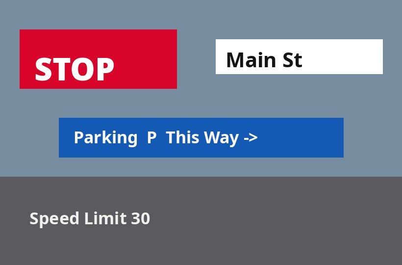

Run it



Drop / choose your own image
–words · angles below
backend –latency –
← All models · CRAFT text detection
Wild · object-detection (text) · WASM
Real signage isn't neatly horizontal. CRAFT's affinity map links letters along whatever direction the word runs, and the decode fits a minimum-area rectangle to each — so the boxes tilt to follow slanted poster type, each reporting its recovered angle. Loosen the character-link threshold to chain letters across bigger gaps.

–words · angles below
CRAFT's region + affinity maps already follow the ink, whatever its angle. The decode groups the linked pixels into a word, computes its convex hull, then finds the tightest rectangle over any rotation (rotating calipers). Axis-aligned boxes would swell to fit a 45° headline; an oriented box hugs it — and hands you the angle for free, which is what a deskew-then-OCR pipeline needs.